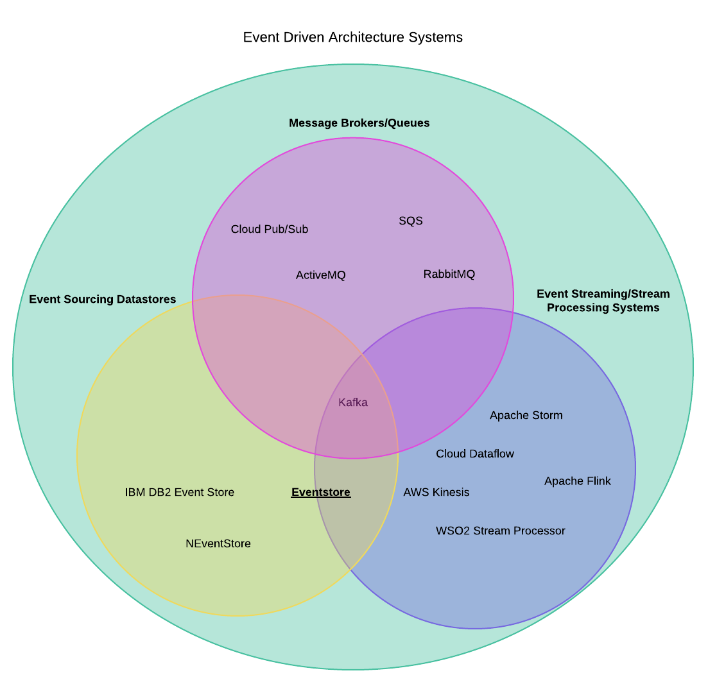

Who am I?
- Srđan (Serge), a DevOps Engineer/SRE
- From an "operational" background, though I know how to code (badly)
- Interested in Infrastructure, Resiliency, automation etc...
- Doing this talk because I wanted to learn more about Event Driven Architecture and Event Sourcing
- Learning about "Event Store" seemed like a good way to do this
- WARNING: Take this talk with a grain of salt (not used in anger)
What to expect from this talk?
- Learn what Event Store is
- Learn what Event Sourcing is and how it fits into Event Driven Architecture
- See a demonstration of the main features of Event Store
- Learn what things Event Store is not good at
- Be able to tell whether in which cases it might be a good fit or not
What is Event Store?
It is a Datastore. But an "event sourcing" one
(Other Datastore types being Relational, Document based, Columnar, Key-Value etc...)
What does that mean?
So, "event sourcing" is not storing a canonical version of an
object anywhere. Rather you just store a set of "events" which then make up an object.
This is weird and confusing
Yes. It is. An example might help. Git is a good example of such a system (the final state is
arrived/gotten by just applying all of the "commits", i.e. "events" in order)
Where does it fit into the picture?

How is it different from other EDA concepts?
It differs from other concepts in EDA by eschewing "commands" rather the Event being the "command" and the
set of events making up an object
Not:
Command -> Object -> Event
but rather:
Object -> Event -> Changed Object